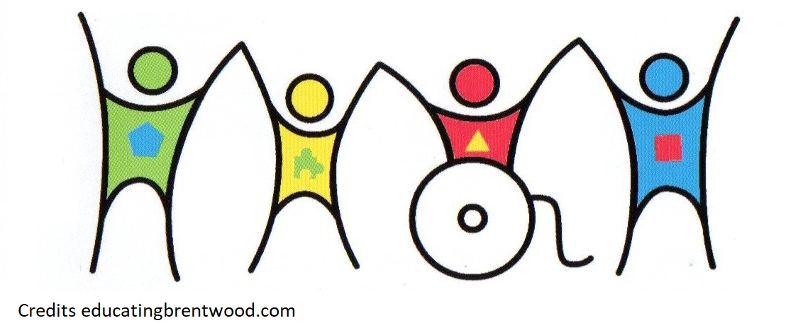

What ever the shape of color it may be
No matter what you don't or do have, you are accepted here.
No matter what you don't or do have, you are accepted here.
This picture is the logo during the Inclusive Education Summit of 2017 where it invites researchers, education leaders and workers to value what is now. It came to be is such way that people can become aware of how people are displaced, where thay find new research, education and to bring back social cohesion. It was made to change the school systems taht promotes equality.
Alternate Research Integration Inclusive Individualism Mainstream Differentiation Co-Operative Accessibility Improve Environment Ethics Improve Inclusion
Equal rights. Equal Opportunity. Equality and equity and two different words. Equality is where everyone is given same amount as the others while equity is where a person is given what he or she deserves. We see everyone as equals no matter how high or how low, slow or fast, we are all equals.